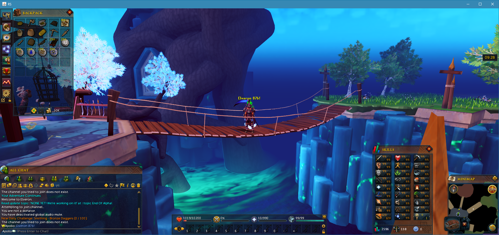
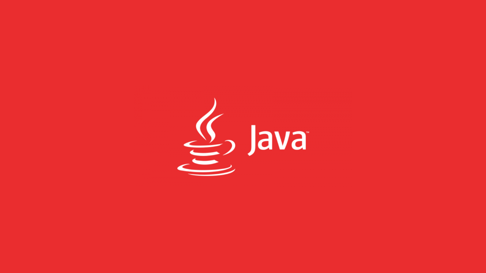

we finaly figured out how to do this with our favourite server we used to play on before it got removed or something? latest nocturne source

its 876 revision which means its almost upto date only missing 20 updates since newest rs update is 896. Benefits: spawn any item in any quantity, see source code, teleport anywhere, be admin, you can change everything helfull links rsps wiki steps in this tutorial will be similiar to this How To... "Matrix 718" youtube video just a bit different for 876 rsps

1. runescape is made with java so you should install oracle java sudo add-apt-repository ppa:webupd8team/java && sudo apt-get update && sudo apt-get install oracle-java8-installer && echo -e "\n\n\033[32meverything done!"